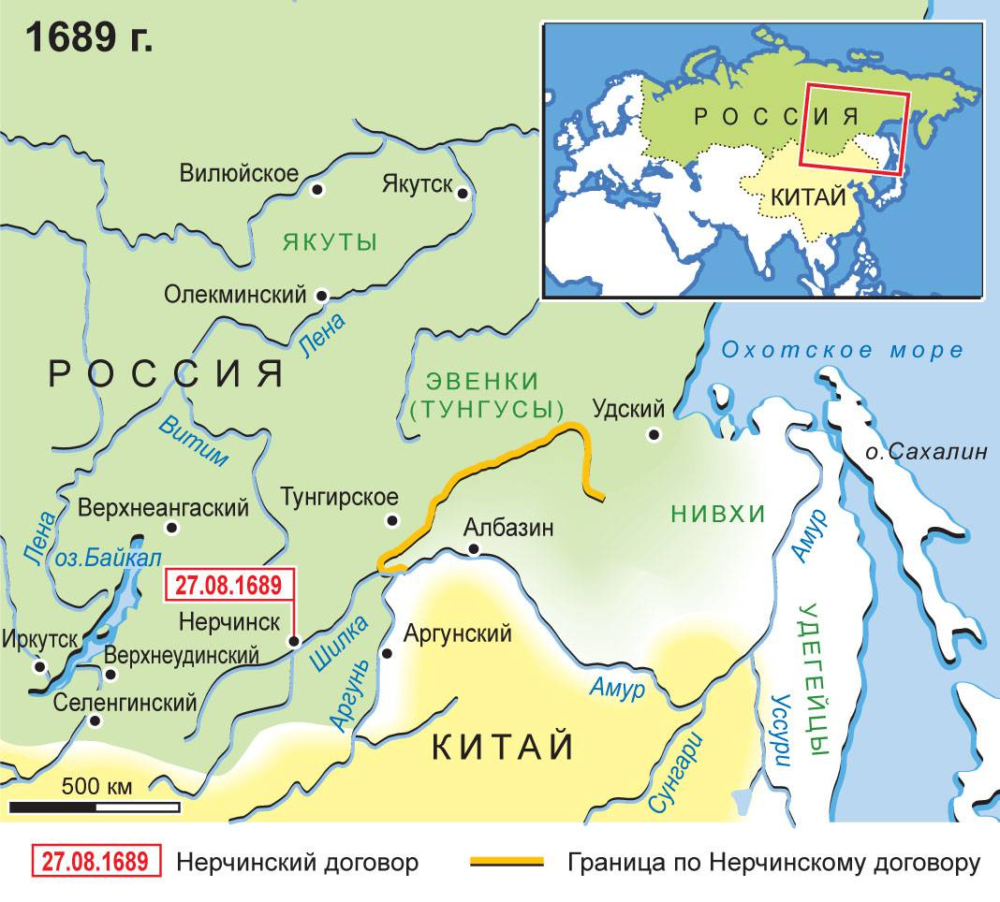

Предыстория: XVI-XVII вв. – освоение Сибири. Русские подошли к Китаю. И Грозный, и Шуйский отправляли посольства, но они не доходили. Первый путешественник Иван Петров, в 1597 году попал в Китай через Монголию, но на аудиенцию к императору не попал за неимением подношений императору.
История: 1618 г. – томский казак Иван Петлин сотоварищи вышел из Томска, через Монголию достиг Китая, оттуда – в Пекин. В Пекине поговорили с китайскими сановниками, получили грамоту от императора с предложением установить посольский торговый обмен. Но в Москве не смогли прочесть эту грамоту, потому что не было переводчиков. Только то, что сообщил сам Иван Петлин, могло быть зафиксировано писарями. Петлин составил «Роспись Китайской сороны» - описание пути из России в Китай, сообщал интересные сведения о Китае. После него - новые посольстваи установление связей.
История на протяжении 17 в.: русские переселенцы в основном мирно продвигаются на Восток, к Тихоокеанскому побережью, для хозяйственного освоения новых земель и обложение ясаком восточных народов. В 1646-1648 экспедиции Василия Пояркова, в 1649 Ерофея Хабарова, которые привели к освоению Прибайкалья и бассейна Амура; основаны остроги Иркутск, Нерчинск, Албазин (самый восточный). По мере продвижения казаков на юго-восток появляется необходимость в выстраивании отношений с Китаем. В 1650-е в Пекин отправлены для установления дипломатических отношений русские посольства, но Цинское правительство не признавало Россию равным партнером и требовало чуть ли не признания вассальной зависимости от Китая и уничтожения всех поселений в бассейне Амура. От послов требовали выполнения обряда коутоу (трехкратное коленопреклонение и девятикратное челобитие). Переговоры кончились ничем, но проникновение русских на Дальний Восток не остановилось. Русские заняли земли народов, формально находившихся в вассальной зависимости от китайского императора, император не мог этого потерпеть. В середине 1680‑х гг. началось военное наступление на занятые русскими земли (сразу после подчинения Тайваня). В 1684 г. – попытка взять русский (албазинский) острог 1685 – окружение Албазина 10-тыс. войском + 200 орудий => русские сдались (их было 450 человек; сдаваясь, сохранили оружие), но осенью русские поселенцы вернулись, собрали урожай и восстановили острог очередная осада, но крепость не сдается. Русское правительство начинает переговоры в 1689 г. в районе г. Нерчинска, причем цинская сторона угрожает военной силой.
27 августа 1689 г.: Нерчинский договор - 1‑й русско‑китайский договор. Условия Нерчинского догвора: граница – по верхнему течению Амура, русские поселенцы и войска должны быть выведены с левобережья Амура, Россия должна была вывести своих поселенцев. Разграничение не было закреплено юридически из‑за разночтений в тексте документов. Для России договор означал потерю уже освоенных земель; пришлось отказаться от Албазина, но Китай заверил, что на полученных от России территориях укреплений строить не будет. 1715 – русская духовная миссия в Пекине, первое дипломатическое и торговое представительство. 1728 г.: Кяхтинский договор. В нем фиксировались границы между Россией и территориями, заселенными монголами, подчеркивался промежуточный (неокончательный) характер разграничения между Россией и Китаем, определялись вопросы торговых отношений и русской духовной миссии в Пекине 18 ‑ 1 ½ 19 вв.: расширение торговых связей м/д Россией и Китаем. Но вопрос об окончательном территориальном разграничении на Дальнем Востоке остается открытым. При правлении Елизаветы Первой китайское посольство прибыло в Санкт-Петербург, чтобы разрешить вопрос с калмыками, но данное посольство закончилось только подтверждением зависимости калмыков от России.